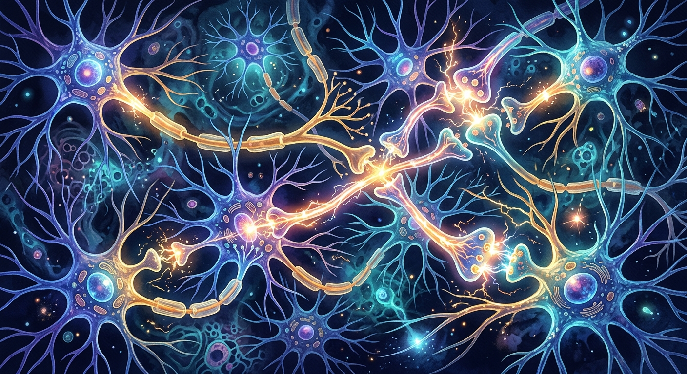

La Plasticidad Cerebral frente al Reentrenamiento de Modelos
La diferencia fundamental entre el aprendizaje del cerebro humano y el reentrenamiento de una inteligencia artificial radica tanto en la microarquitectura del sistema como en el algoritmo de asignación de crédito que utilizan. Mientras que las redes neuronales artificiales son simplificaciones matemáticas rígidas que habitualmente se entrenan desde cero con pesos inicializados de forma aleatoria, el cerebro humano cuenta con una preconfiguración estructural refinada por la selección evolutiva a lo largo de millones de años, la cual provee ciertos pilares cognitivos estables o "pesos estáticos" que facilitan la asimilación rápida de nuevas experiencias.
En los sistemas de inteligencia artificial tradicionales, el procesamiento de datos y la memoria están físicamente separados, lo que genera el cuello de botella de von Neumann y exige mover gigabytes de información constantemente. Por el contrario, en el cerebro orgánico, el almacenamiento y el procesamiento están integrados en las propias sinapsis mediante plasticidad Hebbiana. Gracias a esto, el ser humano implementa la configuración prospectiva, un principio que evita la degradación del conocimiento previo y permite una adaptación espontánea ante la incertidumbre.
Pasos en el proceso de consolidación de memoria biológica:
- Captación del estímulo sensorial: Evaluación de la prioridad afectiva en estructuras como la amígdala.
- Inferencia de la actividad óptima: Asentamiento de la actividad neuronal antes de modificar las conexiones físicas.
- Almacenamiento transitorio: Exploración temporal de la fuerza sináptica de bajo consumo energético.
- Ajuste y consolidación local: Cambios materiales permanentes en la atracción entre neuronas.
- Retención diferenciada y poda: Eliminación de conexiones redundantes para preservar la eficiencia del sistema.
